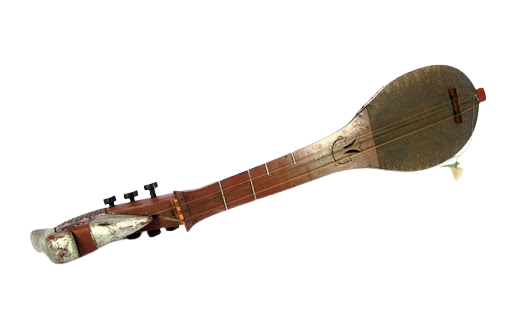

Kalimantan Selatan

Ini adalah Panting, Panting adalah alat musik seperti gitar namun dengan ukuran yang kecil. Berasal dari kata memanting yang artinya memetik. Panting berasal dari Suku banjar Kalimantan Selatan. Biasanya, panting dimainkan bersama gong, biola, suling dan lain-lain.